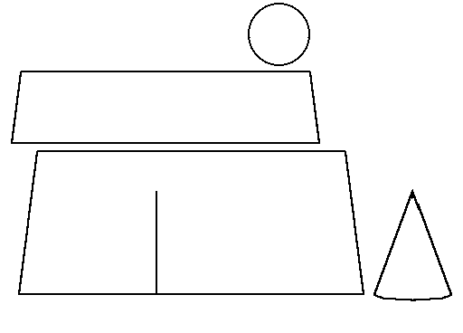

Pattern drawing based on N�rlundThis conical hat is made of two bands of cloth sewn one on top of the other, and with a gore in back. It should be noted that as with the construction of the other Herjolfsnes caps, the crown is made of two separate pieces. There is a narrow hemming, deepest in front, but gradually narrowing towards the rear.
This item has been radiocarbon dated to about 1300 CE (calibrated C-14 1280-1380 CE), making it a full century earlier than the "Burgundian hat" it appears to resemble. My suspicion is, then, that it should be worn with the top folded over in the style known to the eastern Scandinavians.
Go to Page, or Herjolsnes Site Page
Some Clothing of the Middle Ages - Hats - Herjolfsnes 87, by I. Marc Carlson, Copyright 1997 This code is given for the free exchange of information, provided the Author's Name is included in all future revisions, and no money change hands-